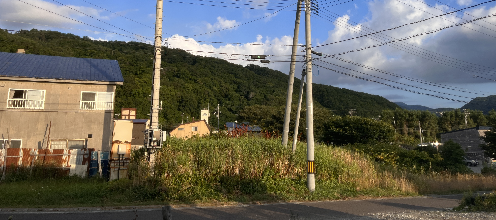

SHIMAMAKI
島牧村是座落於北海道西南方的村莊， 沿著海岸線可以把美景盡收眼底， 豐富的生態環境也使此地產物富饒。
這是島牧村內唯一一家便利商店，剛好就在家的巷口
島牧村郵局小小一間的，我們也寄出對家人的思念

島牧村的西邊就是日本海，既湛藍又清澈，夏天非常消暑
這是狩場山，它有各式各樣的狀態，有時早晨會被似是聖光的陽光灑在身上，
有時也被迷霧繚繞，又或是雲的影子映照在綠叢叢的樹木上，十分變化多端。
TOMATO FARM
Kosho一家在北海道島牧村生產有 機迷你番茄和放養雞生產的雞蛋， 2023 年暑假我前往此地打工換宿。

這是由 Kosho 夫婦一起經營的農場，名字叫做 Happy Place，一共有14個溫室在栽種蕃茄，其中包含故各式各樣品種的番茄，有大顆也有小顆的，通通遍佈在這14個溫室裡，
因為溫室裡很熱所以我們都在早晨 05:00 開始工作，每天都要摘下熟成的番茄帶回去檢查、篩選、包裝;農場裡也有養雞，總共有兩個大大的雞棚，後面是一塊空地讓雞們到處亂跑，
每天也會檢查牠們是否有下蛋，帶回去擦拭、篩選、包裝。復一日一樣的工作內容，直到我們離開。


在工作時我習慣戴上頭巾、袖套、手套，因為番茄花的花粉非常多，而且容易染色，所以用這些物理上 的東西來隔絕花粉。通常一人摘採一個溫室所需時間是 40~60 分鐘，
最初還不熟悉時會摘一個小時以上， 因為要辨認這個番茄是否可以摘下，以及數量非常龐大，有些番茄會藏在不易看見的深處，因此會花比較多時間。
一個溫室會有 3~4 個走道可進行摘採，不過許多走到會被枝葉擋住，所以有時會無法用推車 進行作業，這時候就只能帶著籃子摘取，比較困難重重。
通常早上我們會工作兩個小時，採摘兩個溫室， 專注於番茄身上時，時間其實過很快。
DAILY LIFE
在島牧村和Kosho一家四口生活的三個禮拜可以用「樸實無華」來形容，所有平凡的氣息皆讓我沈溺於此地。


和家裡的妹妹們一起玩桌遊，或是一起摺紙、學習對方國家的語言
我們也會一起去公園玩
每天也會待在客廳寫日記、吹風、看看窗外的變化
NATRUE

島牧村依山靠海，當地還可以見到野生狐狸，是個自然資源非常豐富的地方，是個擁有寶貴資源的地方。

花花草草｜夕陽西下
家門口的花叢
狩場山